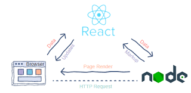

Q-1 What is React Js?
An open-source JavaScript package called React JS is used to create user interfaces, typically for mobile and single-page applications.
In React, a user interface is constructed from components. Each of these elements is a user-defined Javascript function.
These components can take props (properties) as inputs and return React elements that specify exactly how a certain piece of the UI (user interface) should look in response.
Commonly referred to as the root node, a single HTML element serves as the foundation for most React applications.
The only method to "change" a React element is to render a new one on the screen because React elements are immutable (cannot be changed). React keeps track of all these element changes in a Virtual DOM.
Calling the ReactDOM causes elements to be rendered on the screen.The createRoot() method compares the actual and virtual DOM elements with the least amount of modifications possible. In this diffing process, the ReactDOM always tries to avoid reloading the entire page, as demonstrated below:
Q-2. What is NPM in React Js?
The Biggest Software Registry (Library) in the World
The biggest software registry in the world is npm.
There are more than 800,000 code packages in the registry.
To share software, open-source developers utilize npm.
Npm is often used by businesses to control private growth.
Npm usage is free.
Use of npm is free.
All npm public software packages are available for download without the need to register or log in.
Software can be downloaded and installed using the CLI (Command Line Client) provided by npm.
Windows Example
C:\>npm install <package> </package>
Installing Node.js with npm
Node.js is installed before npm.
This implies that in order to install npm on your machine, you must first install Node.js
Visit the official Node.js website at https://nodejs.org to get the software.
Manager of Software Packages
When npm was first developed as a package manager for Node.js, it went by the moniker npm (Node Package Manager).
Package.json files, which are used to define all npm packages.
JSON must be used to format the package.json file's content.
The name and version fields must both be included in the definition file.
Example:-
{ "name" : "foo",
"version" : "1.2.3",
"description" : "A package for fooing things",
"main" : "foo.js",
"keywords" : ["foo", "fool", "foolish"],
"author" : "John Doe", "licence" : "ISC" }
Taking Care of Dependences
Dependencies can be managed with npm.
All of a project's dependencies can be installed using npm (in a single command line).
In a package, dependencies are also defined.json.
Q-3.What is Role of Node Js in react Js?
The top 5 benefits of using React Node.js
Here are 5 reasons to utilize React and Node js to streamline web development and create highly effective, scalable code.
1. Contributes to keeping a high server load
The inclusion of Node in your React project makes it incredibly simple for servers to manage server load balancing and simultaneous network requests.
2. Aids in keeping real-time data current
The combination of React with Node js is quite helpful if your app requires real-time data handling or data streaming. This is so that Node can manage ongoing server connections and React can render data on the front end.
3. facilitates the creation of single-page applications
You can simply build single-page applications like Gmail and Facebook using React and Node js. Intuitive UI/UX creation is possible with React, and callback-based asynchronous data loading is offered by Node.
4. Make creating JSON for your APIs easier
The internet data serialization standard known as JSON, or Javascript Object Notation, aids in the communication of data between a website and a server.
JSON API is helpful for improving consistency in JSON answer formatting, and its effective caching features can reduce unnecessary server queries. It is quite effective to use the JSON API with Node, which encourages code reuse. Using React, the reusable code becomes shareable.
5. MERN stack project technologies
MongoDB, Express.js, React.js, and Node.js are the major four technologies used by the MERN Stack application. We can develop applications like e-commerce and financial websites using this stack. To create apps quickly, developers simply need to be familiar with Javascript and JSON in addition to MongoDB, Express.js, Node.js, and React.js.
Q-4.What is CLI command In React Js?
constructing a new program
There are several ways to construct React applications using construct React App.
npx script use.
npx create-react-app <react-app-name> npx create-react-app
hello-react-app
use the package manager npm.
npm init react-app <react-app-name> npm init react-app
hello-react-app
yarn package management is used.
yarn init react-app <react-app-name> yarn init react-app
hello-react-app
deciding on a template
Create React App uses the default template to create a React application. The original code having a specific built-in capability is referred to as a template. The npm package server offers hundreds of templates with a variety of ophisticated capabilities. Users of Create React App can choose a template by using the -template command line switch.
create-react-app my-app --template typescript
The cra-template-typescript package from the npm server will be used to create a react app using the command above.
setting up a dependence
As React uses the project structure suggested by npm and yarn, React dependency packages can be installed using the standard npm or yarn package commands.
use the package manager npm.
npm install --save react-router-dom
yarn package management is used.
yarn add react-router-dom
launching the program
Depending on the package management being used in the project, the React application can be launched using the npm or yarn commands.
use the package manager npm.
npm start
yarn package management is used.
yarn start
Before launching the application, set the environment variable HTTPS to true in order to execute it in secure mode (HTTPS). For instance, the command below starts the application in HTTPS mode and sets HTTPS in Windows Command Prompt (cmd.exe).
set HTTPS=true && npm start
Q.5 What is Components in React Js?
One of React's fundamental building blocks is the component. Or, to put it another way, every application you create with React will be built up of what are known as components. Using components makes creating user interfaces considerably simpler. You can see a user interface (UI) divided into numerous separate parts, or components, and work on them independently before merging them all into a parent component to create your final UI.
As you can see in the figure below, we have dissected the GeeksforGeeks homepage's user interface into its component parts.
.jpg)
React components essentially return JSX code that specifies what should be displayed on the screen.
Component types in ReactJS
There are primarily two categories of components in React: Functional Components: Javascript functions are what functional components are. Writing a javascript function allows us to build a functional React component. We shall discuss if these functions accept data as parameters later in the lesson. The example below illustrates a React component that is functionally sound:
return (<h1>
Welcome Message!
</h1>);
}</p>
Class Components: Compared to functional components, class components are a little more sophisticated. While the class components can cooperate with one another, the functional components in your application are unaware of the other components. Data can be passed across class components by using the pass method. To develop class-based components for React, we can use JavaScript ES6 classes. A React component that uses classes is demonstrated in the example below:
<p>class Democomponent extends React.Component { render() {
return <h1>Welcome Message!</h1>; } } </p>
In the two instances above, we developed components that are identical to one another, and we also described the key distinction between a functional component and a class component. In subsequent lectures, we will learn more about the characteristics of class-based components.
For the time being, bear in mind that we won't employ functional components until we are certain that they don't need to communicate or collaborate with any other components. This means that while we can combine several functional components under a single functional component, these components do not require data from other components.
Class-based components can also be used for this purpose, although doing so is not advised because doing so will make your program less effective.
Component Rendering in ReactJS
User-defined component rendering is also possible with React. React allows us to start an element with a user-defined component and send this element as the first parameter to ReactDOM in order to render a component.The component can be passed as the first argument to the ReactDOM.render() method or rendered directly.
How to initialize a component to an element is demonstrated by the syntax below:
const elementName = <ComponentName />;
Q.6 What is Header and Content Components in React Js?
An essential component of a website's design is the header. It represents the website's first impression. It offers practical links to other parts of the website that the user might find interesting. In this article, we'll use React.js and Material UI to build a working Header.
Approach: We will start by using some installs to build a simple react app. Using Material-UI, we will create a new Header Component with some decoration. We'll use the Material UI App Bar, which offers screen titles, navigation, and actions, to construct a header. Additionally, we will require an internal ToolBar to set the settings of the child components and position them all horizontally. Then, by importing the freshly built Header into our default Home page, represented by the App.js file, we will make some modifications. Let's now begin to make this.
React Application Development And Module Installation:
Step 1: Use the command below to create a React application:
npx create-react-app foldername
Step 2: Use the following command to move to your project folder after creating it, i.e., foldername:
cd foldername
Step 3: Execute the following command to install the material-ui modules after building the React.js application.
npm install @material-ui/core
npm install @mui/icons-material
npm install @mui/material
Create a new file called Header.js in the "src" folder of the project. We'll put our header component in this file. The revised project structure will now appear as follows:

Step 3: The header component will now be created. We'll use the Material UI App Bar Component.The top App Bar offers information and options relevant to the active screen. Branding, screen names, navigation, and actions all use it. It can change into a navbar or an action bar for the current context. The Material UI Tool Bar functions in conjunction with the AppBar rather than separately like other Material UI components. The settings of the toolbar component are set to the child component, which aligns them all horizontally.
Header.js
import * as React from "react";
// importing material UI components
import AppBar from "@mui/material/AppBar";
import Box from "@mui/material/Box";
import Toolbar from "@mui/material/Toolbar";
import Typography from "@mui/material/Typography";
import Button from "@mui/material/Button";
import IconButton from "@mui/material/IconButton";
import MenuIcon from "@mui/icons-material/Menu";
export default function Header() {
return (
<AppBar position="static">
<Toolbar>
{/*Inside the IconButton, we
can render various icons*/}
<IconButton
size="large"
edge="start"
color="inherit"
aria-label="menu"
sx={{ mr: 2 }}
>
{/*This is a simple Menu
Icon wrapped in Icon */}
<MenuIcon />
</IconButton>
{/* The Typography component applies
default font weights and sizes */}
<Typography variant="h6"
component="div" sx={{ flexGrow: 1 }}>
GeeksforGeeks Header
</Typography>
<Button color="inherit">Login</Button>
</Toolbar>
</AppBar>
); }
Step 4: Once the Header component has been created, it will be imported into App.js, where the following changes will be made.
App.js
import React from "react";
import Header from "./Header";
function App() {
return (
// Using the newly created Header
// component in this main component
>Header/<
);
}
export default App;
How to run the program: Use the following command to launch the program from the project's root directory:
npm start
The output that appears when you visit http://localhost:3000 in your browser is as follows:

Q.7 How to install React Js on Windows, Linux Operating System? How to Install NPM and How to check version of NPM?
React JS is an open-source front-end JavaScript library that uses components. It is applied to the development of quick and engaging user interfaces for web-based and mobile apps. React needs less coding and offers more functionality, making it simple to construct dynamic applications. Both large MNCs and recent startups use it.
Features of React:
1. Reusable Components: Each component in a single React app has its own logic and code, but we can easily reuse components any number of times, saving developers' time and improving the effectiveness of their work.
2. Debugging: "React developer tools" make it simple to debug React applications.It is a browser add-on that works with both Chrome and Firefox.
Reactjs setup for Windows:
Install the Windows Node.js installer as the first step. Select this link. Install the LTS version (located on the left) here. Click the Next button until NodeJS is fully installed after being downloaded, keeping all other settings in tact.

Step 2: Enter the command -> in the command prompt to see if it has been fully installed or not.
node -v

It will provide you with the installed version if the installation completed smoothly.
Step 3: Execute the following command on the terminal:
npm install -g create-react-app

React will be installed for you worldwide. Run the command to verify that everything worked as planned.
create-react-app --version

It will provide you the installed version of the React app if everything went correctly.
Step 4: Presently Using the command below, create a new folder where you want to create your react app:
mkdir newfolder
Note: The name of the folder, newfolder, in the command above can be anything.

Use the following command to move inside the same folder:
cd newfolder (your folder name)

Step 5: Execute the command -> inside this folder.
create-react-app reactfirst YOUR_APP_NAME

The installation of the necessary components will take some time.
NOTE: Names can no longer contain capital letters due to npm naming constraints; therefore, type your app's name in lowercase.

Step 6: Now open the IDE of your choice, such as Visual Studio Code, and navigate to the folder where you installed the React app. The folder will be called Newfolder in the example above, and inside it your project's name, reactapp, will be displayed. Use the terminal to navigate to the folder for your app name.Use the command cd reactapp (the name of your app).

Step 7: Execute the following command to launch your app:
npm start

When you execute the aforementioned command, a new tab in your browser will open with the React logo as shown below:

Q.8 How to check version of React Js?
A front-end Javascript library called React is used to create single-page applications (SPAs). Understanding the version can help you check for updates, understand the features that are currently available, and make sure that other dependencies are compatible. We will look at many ways to check the ReactJS version in this article.
We'll go over three approaches to determine the React version in this article.
- package.json file usage
- command line use
- Using React's default import's version property
using the package.the json file
Our project's metadata is contained in the package.json file. When we build our React project, it is automatically created. Using the command listed below, we can produce a react application.
npx create-react-app name_of_the_app
Numerous name/value pairs in JSON format are found in the package.json file. As seen in the image below, we can quickly check the version of React by looking at the list of dependencies.

Command line usage:
The command listed below can be used on our command line to quickly check the React version.
npm view react version
Below is a description of the output showing how to use the aforementioned command on the command line.
 Using React's default import's version property:
Using React's default import's version property:
The object that is imported by default from the React library has a version attribute. This property can be used inside our JSX elements whichever we like.
Syntax: The version property's syntax is listed below.
import React from 'react'; let a = React.version
Create a react project using the command that was covered in the article above in order to follow along.
the App.js file The code below shows how to use the version property on a React object and includes a description of the App.js file's contents.
Javascript
<p>
import React from 'react';
const App = () => {
return <h1>
We are currently using react version {React.version}
</h1>;
}
export default App;</p>
How to run the program: To launch the application, enter the following command on the command line.
npm start
Output: Launch your browser and navigate to http://localhost:3000 to view the output listed below.

Q. 9 How to change in components of React Js?
When working on a single page application, changing the state of a React component is helpful since it allows the user to see new content without having to reload the page.
The initial state value must be set in the constructor method, and the element whose click causes the state to change must have its click event handler defined. After that, give the function to the click handler and use setState to modify the component's state inside the function. The setState function is used to modify the component's state either directly or through the callback method described below.
Syntax:
this.setState({ stateName : new-state-value})
this.setState(st => { st.stateName = new-state-value })
Example 1: Using this example, you can see how to modify the component's state after a click.
index.js:
<p>import React from 'react'
import ReactDOM from 'react-dom'
import App from './App'
ReactDOM.render(<App />,
document.querySelector('#root'))</p>

Q.10 How to Create a List View in React Js?
Check list-view-react app
Q.11 Create Increment decrement state change by button click?
Check list-view-react app